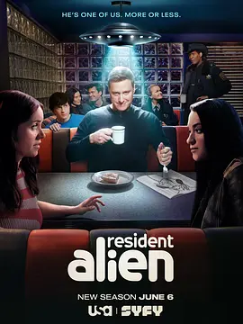

8.3
外星居民 第四季
Resident Alien Season 4
2025
美国
评分 8.3
导演:
艾伦·图代克
演员:
艾伦·图代克 / 萨拉·汤科 / 科瑞·雷诺兹 / 爱丽丝·韦特兰德 / 莱维·费赫尔
类型:
剧情,喜剧,科幻
剧情简介
小镇的宁静再次被打破。第四季中，外星人哈里面对前所未有的难题——他不仅要继续伪装成人类生活，还得适应剧集整体迁移到新频道后形成的更加紧凑、紧张的节奏。哈里原本希望融入人类社会，可形势却逼着他再次站到风暴中心。随着外星势力的动向愈发隐秘，地球上的某些组织也开始行动，试图捕获或利用他，这让他的每一步都变得更加危险。阿斯塔依旧是哈里在混乱中的锚。她试图让他保持“人性”，让他意识到自己的选择不仅关系自身安危，也会牵动整个小镇的命运。与此同时，小镇居民继续带着各自的怪癖生活着——警长、助理、医护、邻居，他们的日常仍旧荒诞却温暖，而这些看似微不足道的互动，持续影响着哈里对“什么值得被守护”的理解。本季还让哈里直面一次次道德难题：他究竟该遵循外星本能，抹除威胁、完成使命？还是继续选择那些让他困惑、恼火、却也给予他归属感的人类？当外星阴影再度逼近，小镇居民逐渐意识到自己可能处在某场更大的风暴中心，他们的幽默与混乱反而成为最后的屏障。随着剧情推进，哈里与朋友们之间的牵绊愈发明显。他必须在身份危机、外星威胁与个人情感之间维持平衡。幽默与荒诞依旧贯穿全季，但每一集中都暗藏着更深的情感纹理：关于信任、选择与人类之所以独特的那份柔软。